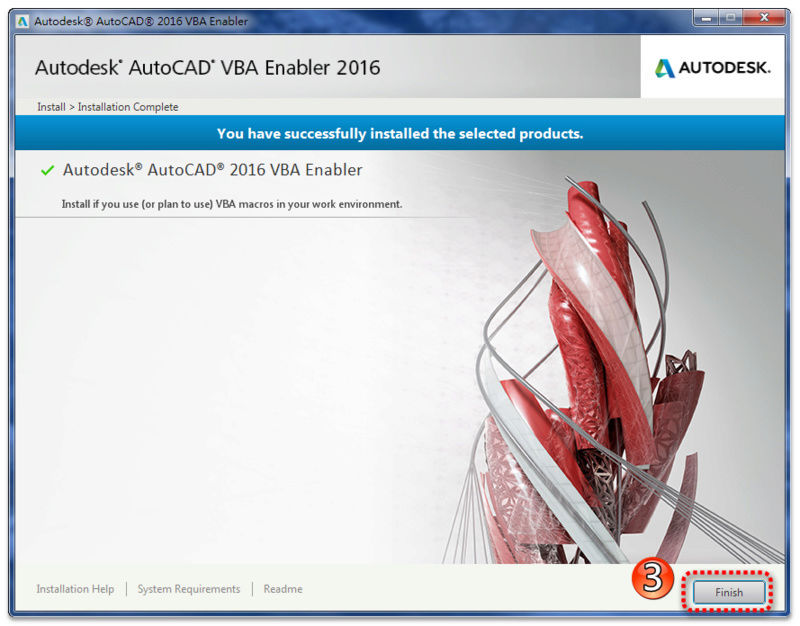
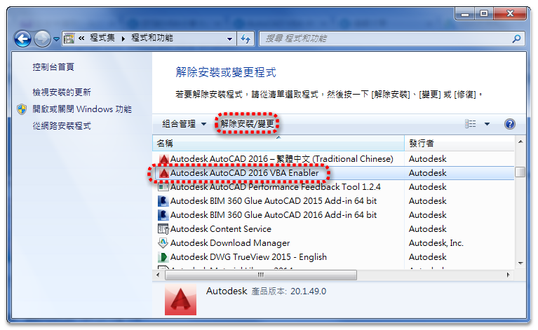
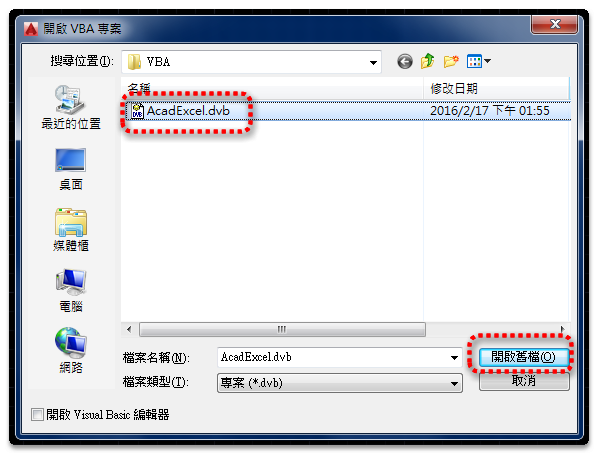
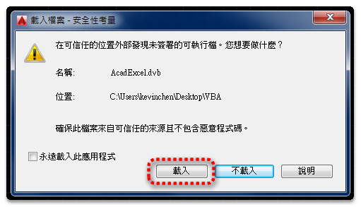
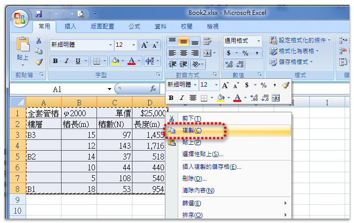
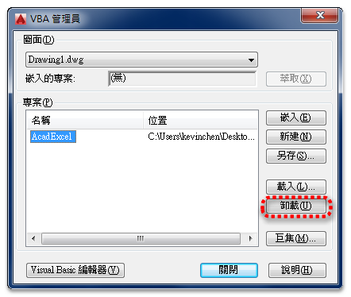

AutoDESK決定從 AutoCAD 2010 版本開始，不再隨軟體自動安裝 VBA，但是用戶還是可以到 AutoDESK官網 下載 VBA模組，然後再補安裝在 AutoCAD 中使用。
不知道原因為何...雖然我很少使用VBA程式，不過要用的時候這樣的確不是很方便～
1.先到 AutoDESK官網 下載：
AutoCAD 2014~2016 VBA 下載
https://www.autocad-tw.com/t19843-topic
2.以 AutoCAD 2016版本（64位元）為例：
下載 AutoCAD_2016_AcVbaInstaller_Win_64bit_dlm.sfx 解壓縮到 C:\Autodesk ，記得先關閉AutoCAD然後執行安裝



註：日後不用時候可以移除VBA：移除方式控制台「新增移除程式」

3.以 vincera大 分享這篇主題 >> [討論]VBA分享 Excel材料表轉入Autocad 來做說明：
步驟1：載入VBA專案：輸入「VBALOAD指令」>> 選取 dvb專案 >> 開啟舊檔

步驟2：載入(AutoCAD 2014以上版本會有此訊息)

步驟3：啟用巨集

註：如果要一開啟AutoCAD自動載入常駐VBA程式使用，請參考「加入啟動套件」 >> 「教學」載入LISP應用程式 APPLOAD指令
步驟4：開啟Excel，打開xls檔案複製儲存格

步驟5：執行VBA專案：輸入「VBARUN指令」>>「執行」

步驟6：指定插入圖塊基準點即可

註：日後不用時候可以移除VBA專案：輸入「VBAMAN指令」>>「卸載」
